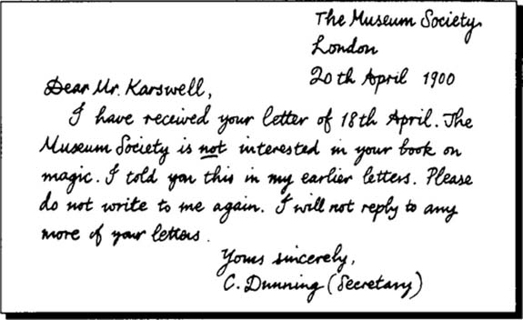

THÔNG ĐIỆP TỬ THẦN
Listen to Part 1:

Ông Dunning viết xong và ký vào lá thư. Karswell đã viết một cuốn sách về ma thuật. Ông ta muốn tặng cuốn sách cho Hội Bảo tàng để họ lưu giữ trong thư viện của họ. Dunning là thư ký của Hội. Ông cho rằng cuốn sách đó là vô nghĩa. Ông không muốn cuốn sách của Karswell có mặt trong thư viện của Hội Bảo tàng.
Hai ngày sau, Dunning đi về nhà bằng xe điện. Ông mệt lử. Ông nhìn vào các quảng cáo trên xe điện - quảng cáo về xà phòng, sô cô la và bánh quy. Có một thông báo kỳ lạ ở đối diện ông. Thông báo được viết bằng chữ màu xanh lớn.
TƯỞNG NHỚ JOHN HARRINGTON.
MẤT NGÀY 18 THÁNG 9 NĂM 1899.
ÔNG ĐƯỢC CHUẨN ĐOÁN SẼ SỐNG THÊM BA THÁNG.
Dunning chạm vào thông báo. Đó là một phần của cửa sổ. Nó nằm bên trong kính cửa sổ.
Dunning nhìn lại. Thông báo đã biến mất.
Ngày hôm sau, ông đi dọc theo Phố Piccadilly. Một người đàn ông đi đến chỗ Dunning và đưa cho ông một mẩu giấy. Dunning đột nhiên thấy lạnh toát. Ông nhìn vào mẩu giấy. Có một cái tên trên đó. Cái tên được viết bằng chữ màu xanh lớn.
HARRINGTON
Dunning không có thời gian để đọc thêm nữa. Người đàn ông lấy mẩu giấy ra khỏi tay Dunning và chạy đi. Hắn biến mất vào đám đông. Dunning ngạc nhiên.
Dunning đi vào Phòng đọc sách của Bảo tàng Anh và ngồi xuống một cái bàn. Ông lấy một số tờ giấy ra khỏi cặp và bắt đầu đọc.
Listen to Part 2:
Một người đàn ông to lớn với khuôn mặt tròn đi ngang qua bàn. Ông ta đánh rơi các tờ giấy của Dunning xuống sàn.
‘Tôi rất tiếc,’ ông ta nói và nhặt các tờ giấy lên. Ông ta đưa các tờ giấy cho Dunning và nói, ‘Tôi tin đây là của ông.’
Dunning tức giận. ‘Vâng, cảm ơn ông,’ ông nói và cầm các tờ giấy. Ông đột nhiên thấy lạnh toát.
Người đàn ông mặt tròn nở một nụ cười gian xảo. Ông ta nhanh chóng rời khỏi Phòng đọc sách. Dunning thấy không khỏe và quyết định về nhà.
Ông Farrer, một người bạn của Dunning, đi ngang qua phòng.
‘Ông ổn chứ?’ ông ấy hỏi.
‘Không, tôi không ổn,’ Dunning trả lời.
‘Người đàn ông đó nói gì với ông?’ ông Farrer hỏi. ‘Ông có quen ông ta không?’
‘Không, tôi không quen,’ Dunning nói.
‘Người đàn ông đó tên là Karswell,’ Farrer nói. ‘Ông ta là một kẻ độc ác.’
Listen to Part 3:
Dunning ngạc nhiên.
‘Tại sao ông lại nói vậy?’ ông hỏi.
‘Đó là một câu chuyện dài,’ Farrer nói. ‘Chúng ta hãy đi ăn trưa cùng nhau.’
Dunning cất các tờ giấy vào cặp. Hai người đàn ông rời khỏi Phòng đọc sách và bước ra đường. Dunning nhanh chóng thấy khỏe hơn.
Trong khi họ đang ăn trưa, Farrer kể cho Dunning về Karswell.
‘Tôi sống gần ông Karswell,’ ông nói. ‘Karswell sở hữu một ngôi nhà lớn với công viên, được gọi là Tu viện Lufford. Những đứa trẻ trong làng thường chơi trong công viên.
‘Karswell không thích trẻ em chơi trong công viên. Ông ta đuổi chúng khỏi công viên nhiều lần - nhưng chúng vẫn luôn quay lại. Một ngày nọ, Karswell mời tất cả trẻ em trong làng đến dự tiệc trà. Thầy hiệu trưởng rất ngạc nhiên. Ông đưa bọn trẻ đến Tu viện Lufford sau giờ học. Karswell chiếu một bộ phim.
‘Bộ phim đầu tiên chiếu cảnh một con sói có hàm răng dài và móng vuốt sắc nhọn. Karswell tạo ra những tiếng động khủng khiếp của động vật và những đứa trẻ nhỏ hơn bắt đầu khóc.
‘Sau đó là một bộ phim về một cậu bé nhỏ trong công viên. Đó là công viên Tu viện Lufford - nơi bọn trẻ thích chơi. Cậu bé bị một sinh vật trắng khủng khiếp đuổi theo. Cậu bé chạy trốn, nhưng sinh vật trắng đã bắt được cậu bé và ăn thịt cậu. Lũ trẻ đều rất sợ hãi.
‘Cha mẹ của bọn trẻ rất tức giận với thầy hiệu trưởng và Karswell,’ Farrer tiếp tục. ‘Nhưng Karswell đã đạt được mục đích của mình. Không còn đứa trẻ nào chơi trong công viên Tu viện Lufford nữa.’
Listen to Part 4:
‘Thật kinh khủng!’ Dunning nói. Sau đó, ông chậm rãi hỏi, ‘Ông có quen biết ông John Harrington không?’
‘Ông có muốn nói đến John Harrington đã mất năm ngoái không?’ Farrer hỏi.
‘Vâng,’ Dunning nói. ‘Cho tôi biết - Harrington đã chết như thế nào?’
‘Ông ấy ngã khỏi một cái cây,’ Farrer nói.
‘Ngã khỏi một cái cây ư? Thật kỳ lạ. Ông ấy làm gì trên một cái cây?’ Dunning hỏi.
‘Không ai biết,’ Farrer nói. ‘John Harrington đi dọc theo một con đường nông thôn vào đêm khuya. Cảnh sát cho biết ông ấy đang chạy. Ông ấy đánh rơi mũ và trèo lên một cái cây. Sau đó, ông ấy ngã khỏi cái cây và gãy cổ.’
‘Tại sao ông lại biết rõ câu chuyện này vậy?’ Dunning nói.
‘Tôi nghe câu chuyện từ anh trai của ông ấy, Henry,’ Farrer nói. ‘Ông nhớ Henry Harrington chứ, đúng không? Hai ông từng học đại học cùng nhau. Henry sống không xa đây - ở Piccadilly.’
Dunning về thẳng nhà sau bữa trưa. Ông thấy một tờ giấy dán trên cửa nhà mình. Đó là của bác sĩ.
Listen to Part 5:
Dunning đến nhà Bác sĩ Mallows. Bác sĩ kể cho ông nghe những gì đã xảy ra.
‘Người giúp việc của ông đã mua một số cá từ một người đàn ông trên phố,’ bác sĩ nói. ‘Họ nói với tôi rằng người đàn ông đó đang bán cá cho tất cả những ngôi nhà trên phố. Thật kỳ lạ, nhưng không ai khác bị bệnh.’
Dunning ở lại nhà Bác sĩ Mallows cả buổi tối. Gần nửa đêm ông mới về nhà. Ông ở nhà một mình. Ông đi ngủ, nhưng không tài nào ngủ được. Ông nghe thấy tiếng động - tiếng động nhỏ - tiếng đồng hồ tích tắc, tiếng cửa kẽo kẹt. Ông cho rằng mình nghe thấy tiếng động trên cầu thang. Có ai đó đang đi lên cầu thang không?
Ông ra khỏi giường và áp tai vào cửa. Ông không nghe thấy gì.
Ông mở cửa. Ông đứng nhìn và lắng nghe trong bóng tối. Một luồng gió ấm thổi vào nhà. Luồng gió lướt qua chân ông như một con mèo.
Ông bật công tắc đèn. Không có gì xảy ra. Điện không hoạt động.
Dunning để nến ở đầu giường và một hộp diêm dưới gối. Ông đi đến bên giường và đưa tay xuống dưới gối. Ông không sờ thấy hộp diêm, nhưng ông sờ thấy một cái miệng với hàm răng sắc nhọn và lông!
Ông sợ đến mức chạy ra khỏi phòng. Ông khóa mình trong một phòng ngủ khác. Cả đêm ông lắng nghe tiếng động bên ngoài cửa. Ông không thể ngủ được.
Ông gửi tin nhắn cho ông Henry Harrington. Harrington đến khách sạn vào buổi tối. Họ cùng ăn tối.
Dunning kể cho Harrington nghe về những điều kỳ lạ đã xảy ra. Ông hỏi Henry về anh trai của ông - John Harrington.
Listen to Part 6:
‘Anh trai tôi,’ Harrington bắt đầu, ‘trở nên rất kỳ lạ. Trong hai tháng, ông ấy nghĩ rằng có người đang theo dõi ông ấy. Ông ấy nói về ma thuật.’
‘Ma thuật!’ Dunning ngạc nhiên nói. ‘Tại sao anh trai ông lại nói về điều đó?’
‘John biết rất nhiều về ma thuật,’ Harrington nói. ‘Trước khi gặp rắc rối, John đã viết một bài báo trên báo về một cuốn sách về ma thuật. Ông ấy nói cuốn sách đó là vô nghĩa. Tác giả của cuốn sách đó rất tức giận. Tác giả của cuốn sách đó tên là Karswell.’
‘Karswell!’ Dunning nói.
‘Ông có quen ông ta không?’ Harrington hỏi.
‘Vâng, tôi có quen,’ Dunning nói. ‘Ông ta muốn tặng một cuốn sách về ma thuật cho Hội Bảo tàng. Tôi không muốn cuốn sách đó có mặt trong thư viện. Tôi nói với ông ta rằng cuốn sách đó là vô nghĩa.’
‘Vậy thì ông đang gặp nguy hiểm,’ Harrington nói. ‘Tôi tin rằng Karswell đã sát hại anh trai tôi bằng ma thuật! Tôi sẽ kể cho ông nghe toàn bộ câu chuyện.’
Hai người đàn ông ăn xong. Họ ngồi nhâm nhi rượu mạnh và hút xì gà.
‘Karswell rất tức giận vì John nói cuốn sách đó là vô nghĩa,’ Henry Harrington tiếp tục. ‘Sau đó, một buổi tối, có một chuyện kỳ lạ xảy ra. John đi xem hòa nhạc. Ông ấy làm rơi tờ chương trình. Một người đàn ông nhặt nó lên và trả lại cho ông ấy.
Listen to Part 7:
‘Khi John về đến nhà, ông ấy mở tờ chương trình. Có một mảnh giấy bên trong. Những chữ màu đỏ và đen kỳ lạ được viết trên tờ giấy. John đã đưa nó cho tôi xem.
‘Chuyện này xảy ra vào tháng 6 năm ngoái,’ Henry Harrington nói. ‘Thời tiết lạnh đến nỗi chúng tôi phải đốt lửa. Chúng tôi đang nhìn vào tờ giấy thì đột nhiên cánh cửa mở tung. Một luồng gió ấm thổi vào phòng. Mảnh giấy bị thổi vào lửa. Nó cháy hoàn toàn trong chớp mắt.’
‘Một luồng gió ấm, vào một đêm lạnh giá?’ Dunning nói.
‘Vâng, tôi nhớ rất rõ,’ Harrington nói. ‘Giống như có thứ gì đó đi vào phòng. Từ đêm đó, John mơ những giấc mơ kỳ lạ. Ông ấy nghĩ rằng có người đang theo dõi ông ấy. Ông ấy không muốn ra ngoài. Ông ấy bật đèn trong nhà và không muốn ở một mình.’
‘Và ông có nhìn thấy người nào theo dõi ông ấy không?’ Dunning hỏi.
‘Không, tôi không nhìn thấy,’ Harrington trả lời. ‘Nhưng tôi đã nhìn thấy một thứ khác. Đó là một cuốn lịch. Nó đến qua đường bưu điện. Mọi ngày sau ngày 18 tháng 9 đều bị cắt bỏ.’
‘Và ngày hòa nhạc là ngày nào?’ Dunning hỏi. ‘Ngày 18 tháng 6 - ba tháng trước khi anh trai tôi mất,’ Harrington nói.
‘Và anh trai ông mất vào ngày 18 tháng 9, trên một con đường nông thôn?’ Dunning hỏi.
‘Đúng vậy,’ Harrington nói. ‘Anh ấy đang chạy trốn khỏi thứ gì đó. Cảnh sát nói rằng anh ấy gãy cổ khi ngã khỏi cái cây. Nhưng tôi nghĩ anh ấy chết vì sợ hãi.’
‘Nhưng ông đã nói với tôi rằng anh trai ông sợ ra khỏi nhà,’ Dunning nói. ‘Tại sao anh trai ông lại đi dọc theo một con đường nông thôn vào ban đêm?’
Listen to Part 8:
‘Bởi vì khoảng mười ngày trước khi chết, rắc rối đã kết thúc,’ Harrington nói. ‘John thấy khỏe. Không có gì theo anh ấy nữa. Anh ấy quyết định đi nghỉ ở vùng nông thôn.’
‘Tôi hiểu rồi,’ Dunning nói. ‘Anh trai ông có nghĩ rằng Karswell đã gây ra rắc rối này không?’
‘Đúng vậy, anh ấy nghĩ vậy,’ Harrington trả lời. ‘John nhớ lại cuốn sách về ma thuật của Karswell. Cuốn sách nói về một cách giết kẻ thù. Một pháp sư đưa một tờ giấy có chữ ma thuật cho kẻ thù của mình. Một con quỷ hoặc ác quỷ sẽ theo dõi kẻ thù và giết hắn ta.’
‘Nhưng người đó có thể trốn thoát không?’ Dunning hỏi.
‘Có, hắn ta có thể trốn thoát,’ Harrington nói. ‘Hắn ta có thể trốn thoát nếu hắn ta trả lại tờ giấy cho pháp sư. Anh trai tôi không thể làm điều này vì tờ giấy đã bị đốt cháy. Vì vậy, ông phải rất cẩn thận. Ông không được lấy bất cứ thứ gì từ Karswell.’
‘Nhưng tôi đã lấy!’ Dunning nói và đứng dậy. ‘Ông ta đã đưa các tờ giấy của tôi trong Bảo tàng!’
‘Vậy thì chúng ta phải xem xét ngay những tờ giấy đó,’ Harrington nói.
Hai người đàn ông nhanh chóng đến ngôi nhà trống của Dunning. Người giúp việc vẫn chưa khỏe. Điện vẫn không hoạt động. Ngôi nhà chìm trong bóng tối. Dunning thắp nến.
Ông sợ.
Ông nghĩ rằng có ai đó trong nhà. Có ai đó đang đợi ông.
Listen to Part 9:
Ông mở cặp lấy các tờ giấy ra. Ông đã không xem chúng kể từ khi rời Bảo tàng.
Ông xem qua các tờ giấy. Đột nhiên có thứ gì đó chuyển động. Một mảnh giấy nhảy lên không trung và bay về phía ngọn nến.
Henry Harrington phản ứng nhanh. Ông bắt lấy tờ giấy trước khi nó bị đốt cháy. Ông nhìn vào nó dưới ánh sáng của ngọn nến. Ông thấy những chữ đen và đỏ kỳ lạ.
‘Hãy nhìn vào chữ viết,’ ông nói với Dunning. ‘Nó giống như chữ viết trên tờ giấy mà anh trai tôi nhận được.’
‘Bây giờ chúng ta phải làm gì?’ Dunning nói.
‘Chúng ta phải trả lại tờ giấy cho Karswell,’ Harrington nói. ‘Ông đã lấy tờ giấy vào ngày nào?’
‘Hôm qua,’ Dunning nói, ‘ngày 23 tháng 4.’
‘Vậy thì chúng ta còn ba tháng nữa,’ Henry nói. ‘Chúng ta còn đến ngày 23 tháng 7.’
Harrington thuê thám tử để theo dõi Karswell. Karswell ở Tu viện Lufford. Ông ta không bao giờ ra ngoài. Vấn đề là làm thế nào để vào Tu viện Lufford - hoặc làm thế nào để đưa Karswell ra ngoài.
Không có cách nào để vào. Không có du khách nào đến Tu viện Lufford. Họ cố gắng đưa Karswell ra khỏi Tu viện Lufford. Họ gửi lời mời đến Karswell. Họ ghi tên những người khác vào lời mời. Họ mời Karswell đến dự tiệc tối và họp mặt. Karswell từ chối tất cả các lời mời. Ông ta không bao giờ rời khỏi Tu viện Lufford.
Listen to Part 10:
Tháng 4 trôi qua, tháng 6 cũng vậy và hầu hết tháng 7 cũng đã trôi qua. Ngày 20 tháng 7, Dunning biết mình sẽ chết. Ông viết thư cho bạn bè và viết di chúc.
KARSWELL RỜI GA VICTORIA
ĐI XE LỬA KÉO THUYỀN SANG PHÁP
TỐI THỨ NĂM NGÀY 22 THÁNG 7.
‘Bây giờ chúng ta có thể tìm cách trả lại tờ giấy cho Karswell,’ Harrington nói với Dunning. ‘Chúng ta có thể lên tàu và ngồi gần ông ta.’
‘Nhưng tôi phải tự mình trả lại tờ giấy,’ Dunning nói. ‘Karswell biết tôi. Tôi làm thế nào để làm được điều đó?’
‘Nghe đây,’ Harrington nói. ‘Tôi có một kế hoạch. Ông phải đeo râu giả và mặc quần áo khác. Tôi sẽ lên tàu ở Ga Victoria. Tôi sẽ tìm Karswell và ngồi gần ông ta.
‘Xe lửa sẽ dừng ở Croydon. Ông sẽ lên tàu ở Croydon và ngồi gần tôi. Chúng ta sẽ ở trên tàu cùng với Karswell. Chúng ta sẽ tìm cách đưa tờ giấy cho ông ta.’
Dunning đợi ở ga xe lửa Croydon. Ông lo lắng. Tàu lửa đến muộn. Khi tàu đến, Harrington đang nhìn ra ngoài cửa sổ.
Dunning lên tàu. Harrington đang ngồi trong cùng một toa tàu với Karswell. Dunning ngồi xuống và mở một cuốn sách. Tờ giấy nằm trong bìa cuốn sách.
Dunning không nhìn Harrington. Nhưng Karswell nhìn cả hai người đàn ông rất chăm chú. Dunning đeo râu giả và đội một chiếc mũ lớn.
Karswell đứng dậy. Ông ta để lại áo khoác trên ghế. Ông ta đi ra hành lang để hút xì gà.
Listen to Part 11:
Dunning định nhặt chiếc áo khoác. Nhưng Karswell đột nhiên quay lại. Ông ta nhìn Dunning rất chăm chú, sau đó lại ngồi xuống.
Nhiều phút trôi qua. Tàu càng lúc càng đến gần Dover. Dunning nóng và sợ. Làm thế nào ông có thể trả lại tờ giấy cho Karswell?
Harrington đứng dậy và đánh rơi áo khoác của Karswell xuống sàn. Ví của Karswell cũng rơi xuống sàn.
‘Tôi rất tiếc,’ Harrington nói và nhặt chiếc áo khoác lên. Cùng lúc đó, ông ta đá ví về phía Dunning. Ông đưa chiếc áo khoác cho Karswell và nói, ‘Đây, của ông.’
Karswell không lấy chiếc áo khoác. Ông ta nhìn Harrington với ánh mắt căm ghét. Dunning nhặt chiếc ví trên sàn lên trong khi Karswell nhìn Harrington.
Harrington đặt chiếc áo khoác xuống ghế cạnh Karswell. Sau đó, ông quay lại và đưa vé cho nhân viên soát vé.
‘Xin lỗi,’ ông ta nói, ‘tôi có thể nhờ người khuân vác ở Dover mang hành lý của tôi lên tàu không?’
‘Tất nhiên rồi, thưa ông,’ nhân viên soát vé nói. ‘ chúng ta sẽ đến Dover trong năm phút nữa.’
Dunning nhanh chóng bỏ tờ giấy vào ví của Karswell. Sau đó, ông đánh rơi chiếc ví xuống sàn.
Karswell quay trở lại toa tàu.
Listen to Part 12:
‘Cái này có phải của ông không, thưa ông?’ Dunning hỏi, nhặt chiếc ví lên.
Karswell nhìn vào chiếc ví trong tay Dunning.
‘Cảm ơn ông rất nhiều,’ ông ta nói. Và ông ta cầm lấy chiếc ví. Ông ta không nhặt áo khoác của mình.
Tàu chậm lại. Toa tàu trở nên tối. Một luồng gió ấm bắt đầu thổi. Tàu dừng lại tại nhà ga Dover. Karswell xuống tàu ngay khi tàu dừng bánh.

Ông ta nhìn Harrington với ánh mắt căm ghét.
‘Người khuân vác!’ ông ta hét lên. Một người khuân vác chạy đến. ‘Người khuân vác, mang hành lý và áo khoác của tôi lên tàu.’
Ông ta nhìn lại Harrington và nở một nụ cười độc ác. Sau đó, ông ta bước về phía chiếc tàu.
Dunning và Harrington đợi trên sân ga. Người khuân vác mang hành lý của Karswell lên tàu. Họ nghe một sĩ quan nói ‘Tôi rất tiếc, thưa ông, ông không thể mang động vật lên tàu.’
Sau đó, một lúc sau,
Listen to Part 13:
‘Tôi rất tiếc, thưa ông. Tôi nghĩ ông có một con vật đi cùng. Tôi thấy chỉ là một chiếc áo khoác.’
Karswell lên tàu đi Pháp. Dunning và Harrington đi tàu quay lại Luân Đôn.
The Times.